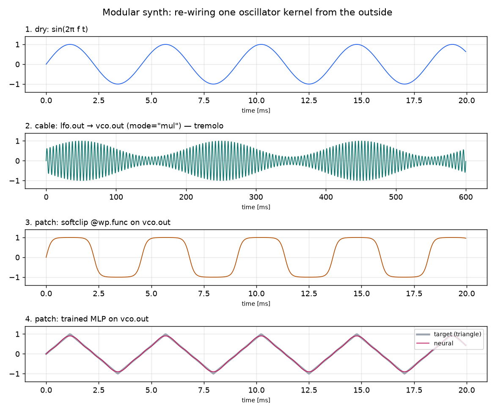
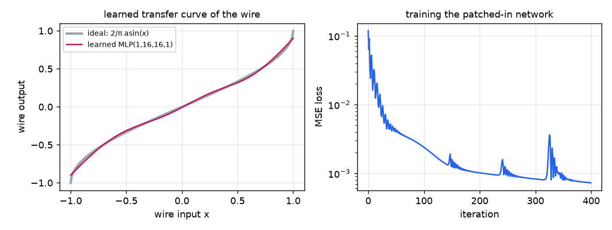
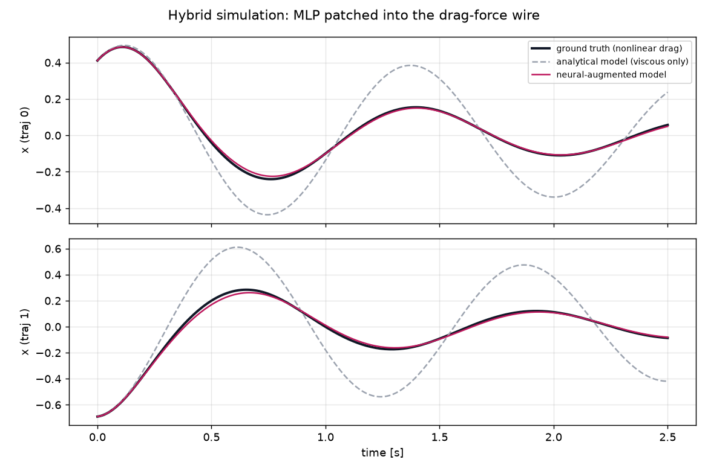
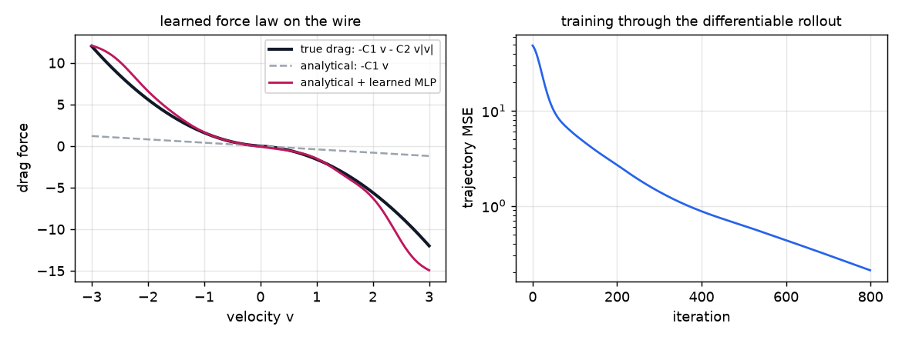
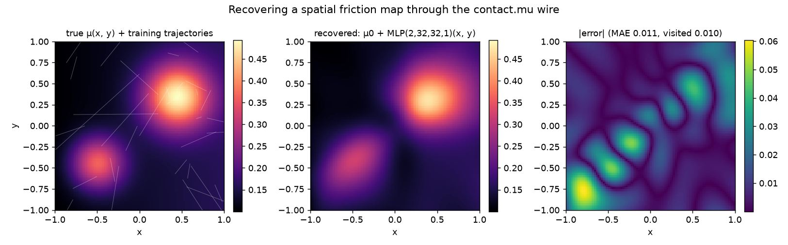
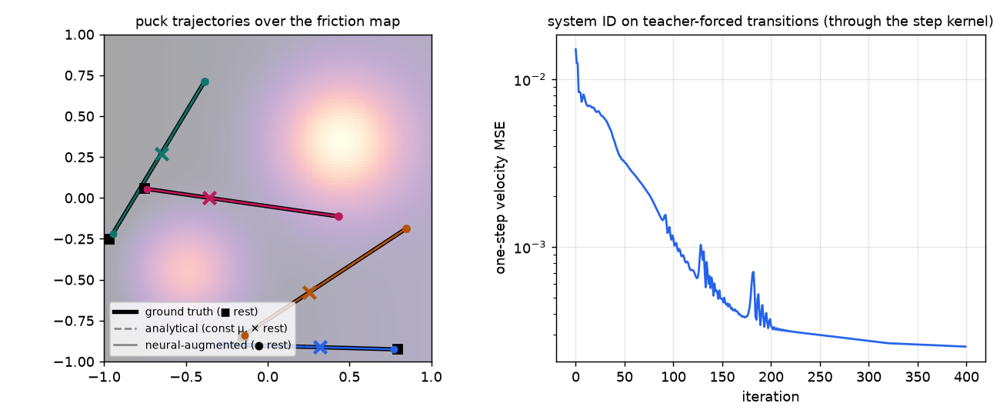

Neural connections inside Warp kernels
All reports
I prototyped warp.patchbay: intermediate values inside Warp kernels can be tagged as named
wires (jack("drag.force", -C1 * v)) and re-wired from Python without editing the kernel —
like plugging cables into a modular synthesizer. Wires can be patched with @wp.func nonlinearities
or tiny MLPs that are generated as Warp functions and inlined into the kernel as plain CUDA device functions
(no extra launches), probed into buffers, connected across kernels with cables, or — via
inputs= — driven by other named wires, reproducing NeuralSim's neural-scalar connections.
Everything goes through Warp's regular code generator, so each patch configuration is hashed and cached like an
ordinary module and remains fully differentiable. In the demos, a neural waveshaper is trained end-to-end
through a synthesizer kernel; a residual drag network trained through a differentiable rollout reduces
trajectory error by 230× while recovering the true nonlinear force law; and for a puck sliding on a table with
spatially varying friction, a network patched between the position wires and the friction wire recovers the full
friction heatmap (map MAE 0.094 → 0.011) where the analytical simulator only has one constant μ.
1. Motivation
NeuralSim augments differentiable simulators by letting variables in the computational graph be replaced or corrected by neural networks ("neural scalars"): the analytical model provides structure and priors, and small data-driven components capture what the equations miss (contact effects, drag, actuator nonlinearities). The connection points are named quantities in the simulator, and the augmentations are specified from the outside — the simulator code itself does not know which of its variables will be learned.
Warp kernels are a natural host for this idea, but Warp programs are compiled Python functions: there is no graph object to splice a network into after the fact. The question this prototype answers is how Warp's code generation can be adapted so that (a) kernels expose named variables, (b) connections between those variables — optionally through NNs and nonlinearities — are declared externally, like a modular synthesizer patchbay, and (c) the networks run inside the kernel as CUDA functions rather than as separate kernel launches. That last point distinguishes this from warp-nn, which provides compact CUDA-graphable network modules for Warp pipelines at the kernel-launch level; here the network lives between two expressions of a single kernel, so it can sit directly inside a simulation step, a per-sample audio path, or a per-ray shading computation. The two are complementary: warp-nn-style layers could be used as the patched-in functions.
2. Design: jacks, patches, cables, probes
The user-facing model is a patchbay. A kernel declares named wires with jack(name, expr); by default
a jack is a pass-through that compiles to nothing. All external re-wiring happens on a Patchbay
object:
from warp.patchbay import MLP, Patchbay, jack
pb = Patchbay()
@pb.kernel
def step(x: wp.array(dtype=float), v: wp.array(dtype=float), ...):
i = wp.tid()
f_spring = -SPRING_K * x[i]
f_drag = jack("drag.force", -C1 * v[i]) # named wire, default: analytical model
...
pb.patch("drag.force", my_wp_func) # insert a @wp.func into the wire
pb.patch("drag.force", MLP((1, 16, 16, 1)), mode="add") # residual neural augmentation
pb.patch("contact.mu", MLP((2, 32, 32, 1)), mode="add", # neural scalars: other wires
inputs=("puck.x", "puck.y")) # feed the network
pb.cable("lfo.out", "vco.freq", via=depth_fn, mode="add") # patch cord between two wires
pb.probe("drag.force") # record the wire into a buffer
pb.launch(step, dim=n, inputs=[x, v, ...]) # hidden params appended automatically| Primitive | Meaning | Modular-synth analogy |
|---|---|---|
jack(name, expr) | named intermediate value with a default (pass-through / analytical model) | a jack socket with a normalled connection |
pb.patch(name, f, mode) | insert @wp.func / MLP / chain into the wire; replace, add (residual), mul | an insert effect |
pb.patch(..., inputs=(a, b)) | feed the inserted function the values of other named wires (packed into a wp.vec) — NeuralSim's neural scalars, where the network's inputs and the augmented quantity are different named variables | a CV input driven from other jacks |
pb.cable(src, dst, via, mode) | route wire src (any kernel) into wire dst, optionally through a function/NN | a patch cable |
pb.probe(name) / pb.read(name) | record every value flowing through the wire into a differentiable buffer | an oscilloscope tap |
MLP(dims, activation, ...) is a tiny fully-connected network whose forward pass is generated as a
@wp.func for the given architecture and whose weights live in one flat differentiable
wp.array. Patching the same MLP instance into several wires (even in different kernels)
shares weights. zero_init_output=True makes an add-mode patch start as an exact no-op,
so training begins from the analytical model — the NeuralSim recipe.
3. How Warp's codegen is adapted
Warp compiles kernels by transforming the Python AST of the decorated function
(warp/_src/codegen.py). Two existing hooks make external re-wiring possible without touching the
compiler itself: wp.Kernel(func, ...) can be constructed at runtime from any Python function in any
module, and wp.static() already demonstrates that codegen-time function binding (including
wp.static(fn_map[key])(x) dispatch) is hashed into the module so changed bindings trigger rebuilds.
The patchbay builds on the first hook with a specialization-by-regeneration scheme:
- AST rewrite. On launch, the kernel's source is parsed and a
NodeTransformerreplaces eachjack("name", expr)according to the current configuration: unpatched jacks becomeexpr(zero overhead); patched jacks becomefn(expr),expr + net(theta, expr), etc.; withinputs=, the default expressions of the named input jacks are inlined at the patch site (packed into awp.vec); cable destinations readbuf[wp.tid()]; probes wrap the value in a recording@wp.func. - Hidden parameters. Network weight arrays, cable buffers and probe buffers are appended to the
kernel signature as extra typed arguments.
pb.launch()supplies them automatically, so the visible launch signature never changes. - Re-entry into Warp. The rewritten function is
exec'd with the original globals plus the bound functions (alinecacheentry keepsinspect.getsourceworking) and wrapped inwp.Kernel(func, key=..., module=...)with a module name derived from a hash of the patch configuration. From here Warp's normal pipeline takes over: the patched@wp.funcs are inlined, adjoints are generated, and the module is hashed and cached — re-plugging a previous configuration reuses the compiled binary instead of recompiling.
The specialized Python source is inspectable (pb.source(kernel)). For the neural-damping kernel with a
residual MLP patched into the drag wire:
def step_pb_68f1db63(x: wp.array(dtype=float), v: wp.array(dtype=float), ...,
_pb_theta_1: _pb_arrayf): # <- hidden weights param
i = wp.tid()
f_spring = -SPRING_K * x[i]
f_drag = -C1 * v[i] + _pb_fn_2(_pb_theta_1, -C1 * v[i]) # <- injected residual MLP
a = f_spring + f_drag
...
And in the generated CUDA, the network is an ordinary device function called from the kernel body — Warp also
emits its adjoint (adj__pb_mlp_...) automatically, which is what makes in-place training work:
static CUDA_CALLABLE wp::float32 _pb_mlp_e07ed821_0( // generated MLP forward
wp::array_t<wp::float32> var_theta, wp::float32 var_x) { ... }
extern "C" __global__ void process_pb_8f5c91c8_..._cuda_kernel_forward(
wp::launch_bounds_t<1> dim,
wp::array_t<wp::float32> var_x,
wp::array_t<wp::float32> var_y,
wp::array_t<wp::float32> var__pb_theta_1) // hidden weights param
{
...
var_2 = _pb_mlp_e07ed821_0(var__pb_theta_1, var_3); // NN inlined in the kernel
wp::array_store(var_y, var_0, var_2);
}
The MLP @wp.func itself is also produced by codegen-on-codegen: for a requested architecture, the
patchbay emits an unrolled fixed-size forward pass over wp.vec intermediates with literal weight
offsets into the flat parameter array, and registers it with wp.func. Architectures are cached, so a
thousand patched kernels with MLP((1,16,16,1)) share one device function.
Alternatives considered
wp.static()closure dispatch — works for pure function substitution (bindings are hashed into the module, so re-wiring triggers rebuilds), but cannot add the hidden weight/buffer parameters that networks, cables, and probes need; the AST route subsumes it.- Runtime function pointers in CUDA — Warp deliberately specializes all function calls at codegen time
(as does its
Callablefunction-parameter feature), and indirect calls would break inlining and adjoint generation. Compile-time specialization with caching keeps CUDA-graph capture and full performance. - NN as separate kernel launches (warp-nn style) — right for larger networks and batched layers, but a wire in the middle of a simulation step needs the network between two expressions of the same thread; splitting the kernel at every wire would force materializing all intermediate state.
4. Workflow
- Write kernels normally; wrap interesting quantities in
jack("module.wire", expr)with their analytical default. This is the only intrusion into simulation code, and it compiles to nothing until patched. - From outside, declare connections:
patchnonlinearities orMLPs into wires (replace/residual/gain), runcables between wires across kernels,probeanything you want to observe. - Launch through
pb.launch(...); the first launch of a new configuration specializes and compiles, subsequent launches are ordinary cached kernel launches. - To train a patched network, record launches on a
wp.Tapeand stepnet.thetawithwarp.optim.Adam— gradients flow through the inlined network adjoint like any other Warp code. - Re-plug at will: configurations are cached by hash, so A/B-ing "analytical vs. neural" is two launches.
5. Demo: a modular synthesizer with a learned waveshaper
example_modular_synth.py takes the metaphor literally: an LFO kernel and a VCO kernel expose jacks
(lfo.out, vco.freq, vco.phase, vco.out). Four configurations of
the same unmodified kernels: dry sine; a tremolo patch cable (lfo.out → vco.out,
mode="mul"); a @wp.func soft-clip insert; and an MLP((1,16,16,1)) waveshaper
patched into vco.out and trained end-to-end through the synth kernel to turn the sine into a triangle
wave (MSE 0.119 → 0.0007 in 400 Adam iterations).

One oscillator kernel, four external wirings. The bottom panel shows the trained neural waveshaper tracking the triangle-wave target.

The trained network recovers the ideal sine→triangle transfer curve 2/π·asin(x) it was never told about — it only ever saw waveform-matching loss through the kernel.
6. Demo: NeuralSim-style hybrid simulation
example_neural_damping.py reproduces the NeuralSim recipe on a differentiable oscillator. The
simulation kernel models a spring with viscous damping and tags the drag force:
f_drag = jack("drag.force", -C1 * v[i]). The "real" system has additional quadratic aerodynamic drag
(−C2·v|v|) the analytical model doesn't know about — ground truth is generated by patching a known
@wp.func into the same wire. A zero-initialized residual MLP is then patched in
(mode="add", so training starts from the analytical model) and trained through 250-step
differentiable rollouts of 16 trajectories.

The analytical model (dashed) under-damps badly; the neural-augmented hybrid (magenta) tracks the ground truth (black) after training.

Left: evaluating the patched wire over a velocity sweep shows the network recovered the true nonlinear force law −C1·v − C2·v|v| within the training regime (|v| ≲ 2.5). Right: trajectory MSE over 800 Adam iterations.
| Model of the drag wire | Trajectory MSE (sum over 250 steps × 16 traj.) |
|---|---|
| analytical only: −C1·v | 48.48 |
| analytical + trained MLP(1,16,16,1) residual | 0.21 |
7. Demo: recovering a spatial friction map (puck on a table)
example_neural_friction.py extends the NeuralSim recipe to spatially varying unmodeled
physics — the tabletop scenario you would set up in Newton:
a puck slides on a table, pushed from random positions in random directions (256 pucks, 150-step rollouts). The
real table has position-dependent friction μ(x, y) — two high-friction patches plus a gentle ramp — while the
analytical simulator knows only a single constant μ₀ = 0.25. The step kernel names three wires:
px = jack("puck.x", x[i])
py = jack("puck.y", y[i])
...
mu = jack("contact.mu", MU0) # analytical default: one constant for the whole table
The neural connection is declared entirely from the outside, plugging the two position wires into the friction
wire through a zero-initialized residual network — this is the inputs= mechanism, matching
NeuralSim's neural scalars where a network reads one set of named simulation quantities and augments another:
pb.patch("contact.mu", MLP((2, 32, 32, 1)), mode="add", inputs=("puck.x", "puck.y"))which specializes the simulation kernel to
mu = MU0 + _pb_fn_2(_pb_theta_1, _pb_vec2(x[i], y[i])) # inlined CUDA, differentiable
The network is trained by system identification on teacher-forced one-step transitions of the observed
trajectories (differentiating through the step kernel), then validated on full 150-step rollouts. Evaluating the
patched wire over a position grid — with the same mu_view viewer kernel that shares the network's
weights — produces the recovered friction heatmap:

Left: the true μ(x, y) with the training trajectories overlaid. Middle: the recovered map μ₀ + MLP(x, y) evaluated on a grid through the patched wire — both friction patches and the background ramp are reproduced. Right: absolute error (MAE 0.011 vs. 0.094 for the constant-μ model); the largest errors sit in corners and low-speed regions where friction is weakly observable from the data.

Friction errors integrate into stopping-distance errors: the analytical model's rest positions (✕) fall far from the truth (■), while the neural-augmented pucks (●) come to rest on target (full-rollout MSE 9.68 → 0.14).
| Model of the friction wire | Friction map MAE | Rollout MSE (150 steps × 256 pucks) |
|---|---|---|
| analytical: constant μ₀ = 0.25 | 0.094 | 9.68 |
| μ₀ + MLP(2,32,32,1)(x, y) | 0.011 | 0.14 |
Two methodological notes. First, training the same objective by naive BPTT through the full 150-step rollout
plateaus at ~40% error reduction: once early friction errors displace a puck's path, the long-horizon position
loss becomes rugged. One-step identification (the standard system-ID setup — NeuralSim likewise trains on short
windows) converges cleanly, and the result is validated on full rollouts. Second, this experiment surfaced a
genuine Warp autodiff issue: gradients through 32-wide MLP layers were silently wrong (verified against finite
differences), because Warp's dynamic-loop adjoint mishandles vector-indexed loops beyond the
max_unroll threshold; the patchbay now raises max_unroll on specialized modules so
patched networks always compile to fully unrolled straight-line code, whose adjoint is exact. This is being
reported upstream.
8. Status, limitations, next steps
- Status. ~500-line prototype module (
warp/_src/patchbay.py+ public shim), 10 unit tests passing on CPU and CUDA (pass-through, re-wiring, add-mode, MLP forward vs. NumPy reference + gradient flow, multi-input patches, probe/cable routing), 4 runnable examples. No changes to Warp's compiler were required — which is itself a finding:wp.Kernel's runtime-construction path plus AST transformers are sufficient hooks. - Wire types. Prototype wires are
float;MLPalready supportswp.vecinputs/outputs, but probes/cables assume scalar wires and 1D launches indexed bywp.tid(). Generalizing to vec/matrix wires and multi-dim launches is mechanical. - Cable semantics. Cables route through probe buffers, so a source must be launched before its destination (same-launch, same-thread cables within one kernel work but reuse of a probe buffer across steps inside one tape can double-count adjoints — the residual-patch path avoids this and is the recommended pattern for training loops).
- Recompilation granularity. The configuration hash is currently patchbay-global; scoping it to the jacks a kernel actually contains would avoid some spurious respecializations.
- Newton integration. The friction demo implements the puck-on-table dynamics directly in a
Warp kernel; the natural next step is declaring jacks inside Newton's
solver kernels themselves — e.g. the friction computations in
newton/_src/solvers/xpbd/kernels.py— so that per-contact quantities (μ, restitution, contact stiffness) become patchable wires fed by world-position and material wires. Since Newton solvers are ordinary Warp kernels, the same specialization machinery applies; the main work is threadingPatchbay.launchthrough the solver's launch sites. - Next steps. Tile-based
MLPforward for wider networks (Warp'sexample_tile_mlp.pyshows the pattern); warp-nn interop so its trained modules can be patched into wires; automatic augmentation discovery à la NeuralSim §V (probe all wires, sparsify which connections a network is allowed to use); CUDA-graph capture of train loops (all launches are graphable since specialization happens before capture); upstreaming the dynamic-loop adjoint fix.
9. Reproducing
git clone https://github.com/NVIDIA/warp && cd warp
git checkout eric/neural-connections # worktree branch, based on main 3f387ad3
python build_lib.py
python -m warp.tests.test_patchbay
python -m warp.examples.patchbay.example_hello_patchbay
python -m warp.examples.patchbay.example_modular_synth --device cuda:0 --outdir out
python -m warp.examples.patchbay.example_neural_damping --device cuda:0 --train_iters 800 --outdir out
python -m warp.examples.patchbay.example_neural_friction --device cuda:0 --train_iters 400 --outdir out